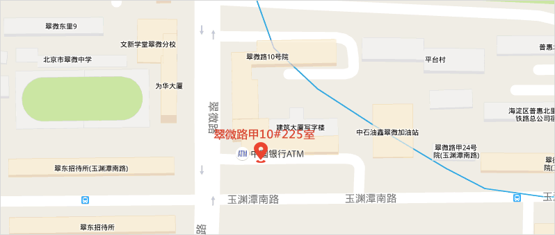

<div ng-controller="aboutUs">
    <div class="sidebar" >
        <ul style="background-color: white;margin:0 10px 0 0;overflow: hidden;" class="list-group sidebar-list col-lg-3 col-md-3 col-sm-12 col-xs-12 ">
            <li class="list-group-item " ng-click="hover=true">
                <div class="list-up " ng-class="{true:'lbd-active',false:''}[hover]">
                    <div class="icon-pic icon-about"></div>
                    <span>关于我们</span>
                </div>
            </li>
            <li class="list-group-item"  ng-click="hover=false">
                <div class=" list-down" ng-class="{true:'',false:'lbd-active'}[hover]">
                    <div class="icon-pic icon-contact"></div>
                    <span>联系我们</span>
                </div>
            </li>
        </ul>
        <div ng-class="{false:'mes-div',true:'lbd-died'}[hover]" >
            <ul class="list-group lbd-mes  col-lg-12 col-md-12 col-sm-12 col-xs-12">
                <div><strong>北京葡萄腾信息技术有限公司</strong>
                </div>
                <li class="list-group-item item-mes">
                    <div class="icon-pic icon-phone"></div>
                    <span>电话：(010)59478634</span>
                </li>
                <li class="list-group-item item-mes">
                    <div class="icon-pic icon-net"></div>
                    <span>网址： www.luoboduo.com</span>
                </li>
                <li class="list-group-item item-mes">
                    <div class="icon-pic icon-mail"></div>
                    <span>邮箱： kefu@ptteng.com</span>
                </li>
                <li class="list-group-item item-mes">
                    <div class="icon-pic icon-loc"></div>
                    <span>地址： 北京市海淀区翠微路甲10院225室</span>
                </li>
            </ul>
            
        </div>
        <div ng-class="{false:'lbd-died',true:'lbd-active'}[hover]" style="background-color: white" class="mes-div">
            <div class="lbd-mes  col-lg-12 col-md-12 col-sm-12 col-xs-12">
                <h4>什么是萝卜多</h4>
                <p>
                    萝卜多是针对创业公司以及独立人才寻找伙伴合作，提供多对多服务，以按需推荐的方式帮助创业团队以及人才解决、盲目寻找、茫然等待的问题。萝卜多不同于其他招聘网站。萝卜多的合作企业和候选人，都是萝卜多精心筛选，认证，陪伴多年的伙伴。
                </p>
                <h4>萝卜多团队介绍</h4>
                <p>成立于2014年，2015年3月开始运营，先后开启了IT修真院、草船云、萝卜多等三条项目主线，主打高质专业高效低价的理念，以卓越的技术实力和人才鉴别能力奠定基石，立足市场。
                </p>
                <p>葡萄藤始终秉持促进中国企业创新与成长为愿景，凭借其团队丰富的行业经验和全球资源网络以及在业界的声誉，不遗余力地帮助创业家和他们的企业突破自我、不断创新、共创事业、共享成功！
                </p>
            </div>
        </div>
    </div>

</div>

